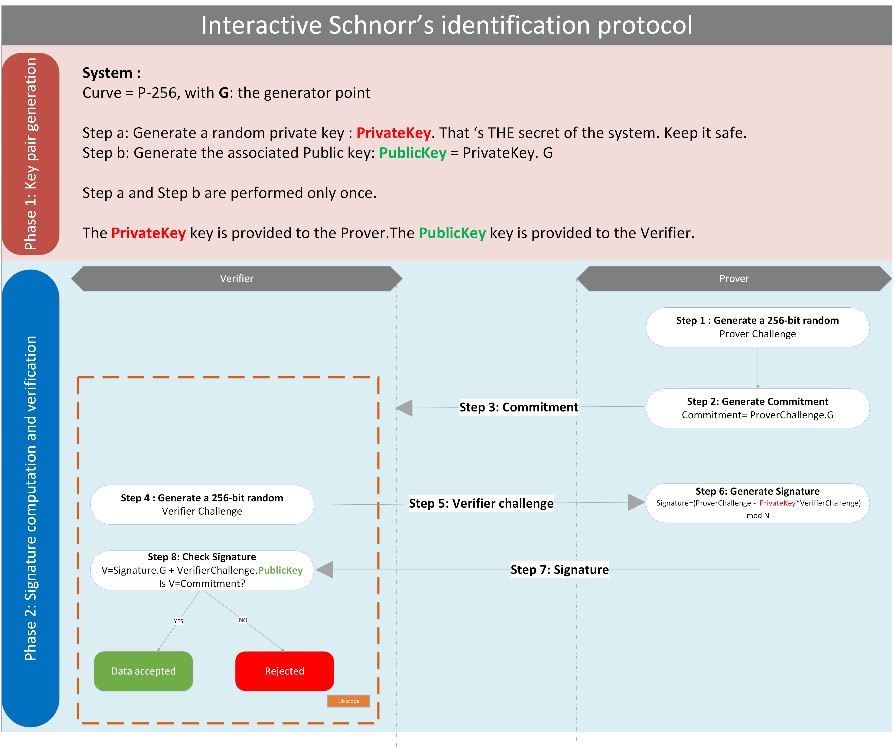

ECC Schnorr’s Authentication protocol
Bibliography
[1] RFC 8235: Schnorr Non-interactive Zero-Knowledge Proof
Goal of the document
The goal of this document is to describe the functionality of the ECC function Schnorr.
- This chapter:
introduce the authentication protocol Schnorr.
- describes all the APIs supported by EM9305 including
the prototypes of the functions
the parameters
the error status
provides the performances of the functions.
Schnorr’s Authentication protocol
Protocol description
Schnorr’s protocol is an identification protocol based on public key primitives. It aims at authenticating unilaterally a party to another party.
Note
In the context of EM9305, Schnorr’s protocol is used to enter in configuration mode. The device EM9305 authenticates the external reader/tester. Therefore, the external reader is the “Prover” and the part EM9305 is the “Verifier”.
Schnorr’s protocol is based on the discret logarithm problem. The library implements Schnorr’s protocol based on ECC. As BLE products already embeds P-256, the Schnorr’s protocol is also based on the underlying curve P-256. The curve details are described here: ECC P-256.
The implemented protocol is an interactive Schnorr’s identification protocol and is partially described in the document [1].
Next picture illustrates the protocol.
The protocol is performed in 2 phases.
Phase 1: Generation of the system key set
An ECC private key (PrivateKey) is generated.
The public key (PublicKey) is computed from the private key. PublicKey=PrivateKey.G
The Private key is distributed to the prover, while the public key is provided to the verifier.
Note
The key pair (PrivateKey-PublicKey) composes the keys of the system. This operation is performed only once.
Phase 2: Authentication
When the prover wants to authenticate to the verifier, the following steps are performed:
The prover generates a random challenge: ProverChallenge
The prover computes the commitment corresponding to the prover challenge: Commitment= ProverChallenge.G
The prover sends the commitment to the verifier
The verifier generates a challenge:VerifierChallenge
The verifier sends the VerifierChallenge to the prover
The prover generates the signature: Signature=(ProverChallenge - PrivateKey*VerifierChallenge) mod N
The prover sends the Signature to the verifier
The verifier verifies the signature. It computes V=Signature.G + VerifierChallenge.PublicKey and compares V with the Commitment. If V=Commitment, the prover is successfully authenticated. Otherwise, the prover is rejected.
Note
The operator “.” in step 2 and 8 is an ECC point multiplication. The “+” ,the “-” and the “*” of steps 6 and 8 are modular operation on scalars.
Why does it work?
Developing the formulae and replacing each element we show that:
V = Signature.G + VerifierChallenge.PublicKey
V = [(ProverChallenge - PrivateKey*VerifierChallenge)]. G + VerifierChallenge .(PrivateKey.G)
V = (ProverChallenge. G) - [(PrivateKey *VerifierChallenge)mod N.G] +[VerifierChallenge *PrivateKey)modN.G]
V = (ProverChallenge. G)
V = Commitment
Therefore, when the prover has knowledge of the PrivateKey , the V value computed by the verifier matches the recieved commitment.
APIs
The library includes useful APIs for the verifier that is to say:
a function that generates the verifier challenge
a function that verifies the prover signature
Note
The embedded library does not include functions executed by the prover.
Enumerations
The error status are given here: ECC Error Enumeration
ECCSchnoor_GenerateVerifierChallenge
Goal of the function
The function generates a 256-bit random challenge.
Function
-
ECC_Error_t ECCSchnoor_GenerateVerifierChallenge(uint32_t *VerifierChallenge)
Generate a random challenge.
- Parameters
VerifierChallenge – [out] a random challenge of the size of the curve (32 bytes)
- Return values
SW_ECC_OK – Successful private key generation
SW_ECC_RANDOM_ERROR – Error in random generation
- Returns
Error status
Parameters
VerifierChallenge : Result buffer of 256-bit(32 bytes)
Return values
Type |
Description |
OK \ NOK |
|---|---|---|
SW_ECC_OK |
Verifier random challenge successfully generated |
OK |
SW_ECC_RANDOM_ERROR |
Error in the random generation |
NOK |
ECCSchnoor_Verify
Goal of the function
The function verifies the consistency of the signature and the commitment received from the prover.
Function
-
ECC_Error_t ECCSchnoor_Verify(POINT *PublicKey, POINT *Commitment, uint32_t *VerifierChallenge, uint32_t *Signature)
Verify the external signature.
- Parameters
PublicKey – [in] The public key of the device. A point on P-256
Commitment – [in] The commitment sent by the external entity. A point on p-256
VerifierChallenge – [in] The 32-byte challenge generated by the device
Signature – [in] The 32-byte signature sent by the external entity
- Return values
SW_SCHNOOR_SIGNATURE_VALID – Signature is valid
SW_SCHNOOR_SIGNATURE_INVALID – Signature is not valid
SW_ECC_INVALID_COMMITMENT – Invalid commitment
SW_ECC_INVALID_PUBLIC_POINT – Invalid public key
- Returns
Error status- Validiy of the signature
Parameters
PublicKey : Public key of the system
Commitment : The commitment received from the prover
VerifierChallenge : The challenge generated during the ECCSchnorr_GenerateVerifierChallenge command
Signature : The signature submitted by the prover
Return values
Type |
Description |
OK \ NOK |
|---|---|---|
SW_SCHNOOR_SIGNATURE_VALID |
Signature is valid. The prover is authenticated |
OK |
SW_SCHNOOR_SIGNATURE_INVALID |
Signature is invalid. The prover is rejected |
NOK |
SW_ECC_INVALID_COMMITMENT |
The commitment is invalid |
NOK |
SW_ECC_INVALID_PUBLIC_POINT |
The public key is invalid |
NOK |
General Performances
Library location
The lib is located in ROM. Schnorr’s authentication protocol is included in the ECC.lib.
Code size
Size in bytes |
|---|
5284 bytes in ROM for the complete ECC lib |
RAM
Size in bytes |
|---|
No global RAM |
Stack
Size in bytes |
|---|
Approximately 600 bytes |
Performances
Function |
Time in ms at 48Mhz |
|---|---|
ECCSchnorr_GenerateVerifierChallenge |
0.287 |
ECCSchnorr_Verify |
127 |
Dependencies
- The ECC lib depends on :
PRNG.lib for the random number generation
AES.lib which is used by PRNG.lib
Example
Next C code shows a basic example of the Schnorr’s protocol APIs in the context of an external reader authenticating to EM9305.
////////////////////////////////////////////////////////////////////////////////
///
/// @file ExampleECCSchnoorUserManual.c
///
/// @project T9305
///
/// @author SAS
///
/// @brief Example of use of Schnoor lib functions
/// @classification Confidential
///
////////////////////////////////////////////////////////////////////////////////
////////////////////////////////////////////////////////////////////////////////
///
////////////////////////////////////////////////////////////////////////////////
///
/// @copyright Copyright (C) 2020 EM Microelectronic
/// @cond
///
/// All rights reserved.
///
/// Redistribution and use in source and binary forms, with or without
/// modification, are permitted provided that the following conditions are met:
/// 1. Redistributions of source code must retain the above copyright notice,
/// this list of conditions and the following disclaimer.
/// 2. Redistributions in binary form must reproduce the above copyright notice,
/// this list of conditions and the following disclaimer in the documentation
/// and/or other materials provided with the distribution.
///
////////////////////////////////////////////////////////////////////////////////
///
/// THIS SOFTWARE IS PROVIDED BY THE COPYRIGHT HOLDERS AND CONTRIBUTORS "AS IS"
/// AND ANY EXPRESS OR IMPLIED WARRANTIES, INCLUDING, BUT NOT LIMITED TO, THE
/// IMPLIED WARRANTIES OF MERCHANTABILITY AND FITNESS FOR A PARTICULAR PURPOSE
/// ARE DISCLAIMED. IN NO EVENT SHALL THE COPYRIGHT HOLDER OR CONTRIBUTORS BE
/// LIABLE FOR ANY DIRECT, INDIRECT, INCIDENTAL, SPECIAL, EXEMPLARY, OR
/// CONSEQUENTIAL DAMAGES (INCLUDING, BUT NOT LIMITED TO, PROCUREMENT OF
/// SUBSTITUTE GOODS OR SERVICES; LOSS OF USE, DATA, OR PROFITS; OR BUSINESS
/// INTERRUPTION) HOWEVER CAUSED AND ON ANY THEORY OF LIABILITY, WHETHER IN
/// CONTRACT, STRICT LIABILITY, OR TORT (INCLUDING NEGLIGENCE OR OTHERWISE)
/// ARISING IN ANY WAY OUT OF THE USE OF THIS SOFTWARE, EVEN IF ADVISED OF THE
/// POSSIBILITY OF SUCH DAMAGE.
/// @endcond
////////////////////////////////////////////////////////////////////////////////
#include <stdint.h>
#include "ECCTypedef.h"
#include "ECCStatus.h"
#include "ECCSchnoor.h"
//Basic example of Schnoor functions with fix test value
//This is the most basic and thus quickest test.
uint8_t Example_ECC_Schnoor_UM(void) {
ECC_Error_t SW;
uint32_t u32Error = 0;
//Supposing that the system keys are :
//1- the private key of the system
/*static const uint32_t PrivateKey[CURVE_SIZE_P256] =
* { 0x3f49f6d4, 0xa3c55f38, 0x74c9b3e3,0xd2103f50, 0x4aff607b, 0xeb40b799, 0x5899b8a6, 0xcd3c1abd };*/
//2- It correspond to the public key(normaly stored in the device T9305)
static const POINT_P256 PubKey = { { 0x20b003d2, 0xf297be2c, 0x5e2c83a7,
0xe9f9a5b9, 0xeff49111, 0xacf4fddb, 0xcc030148, 0x0e359de6 }, {
0xdc809c49, 0x652aeb6d, 0x63329abf, 0x5a52155c, 0x766345c2,
0x8fed3024, 0x741c8ed0, 0x1589d28b } };
//Supposing that the prover(Reader) generates the following challenge
//static uint32_t ProverChallenge[CURVE_SIZE_P256]= {0x12345678,0x9ABCDEF0,0xAABBCCDD,0xEEFF0011,0x12345678,0x9ABCDEF0,0xAABBCCDD,0xEEFF0011};
// and the the Verifier(Device) generates this challenge
static uint32_t VerifierChallenge[CURVE_SIZE_P256] = { 0xABCDEF12,
0xFEDCBA12, 0x12121212, 0x34343434, 0x56565656, 0x78787878,
0x9A9A9A9A, 0x1B1B1B1B };
//then the Prover(reader) should generate the following commitment
static const POINT_P256 Commitment = { { 0xbf4a7502, 0x11c5a2f2, 0x17c557e1,
0x9c1b43a3, 0xd5547099, 0x23181f94, 0x91521db7, 0x5ceb8b16 }, {
0xfebcceb1, 0x66124ba2, 0x3bae58c6, 0xe7d4152c, 0x4609b2f7,
0x1bcc47e9, 0x4b1e95e0, 0x325a9805 } };
//and the following signature
static const uint32_t Signature[CURVE_SIZE_P256] = { 0x14ef47ab, 0x128a3627,
0x73df4636, 0x7ecc1d15, 0x64b5a898, 0xba454da7, 0xdb47b279,
0x2c439c92 };
//Perform the Verification of the signature by the verifier (Device)
SW = ECCSchnoor_Verify((POINT*) &PubKey, (POINT*) &Commitment,
VerifierChallenge, (uint32_t*) Signature);
if (SW != SW_SCHNOOR_SIGNATURE_VALID)
u32Error++;
//return the test status
if (u32Error)
return (1);
else
return (0);
}